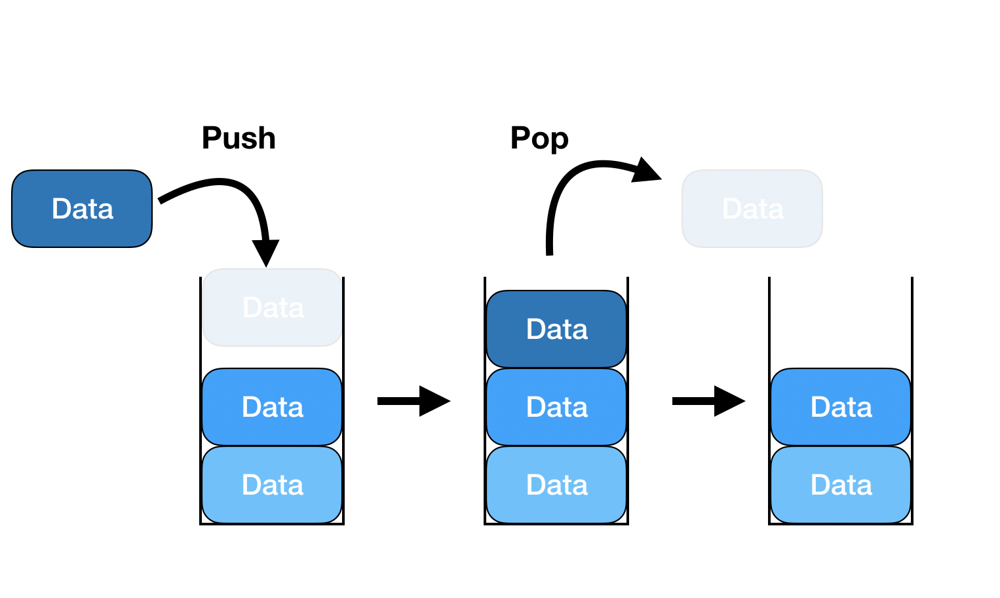
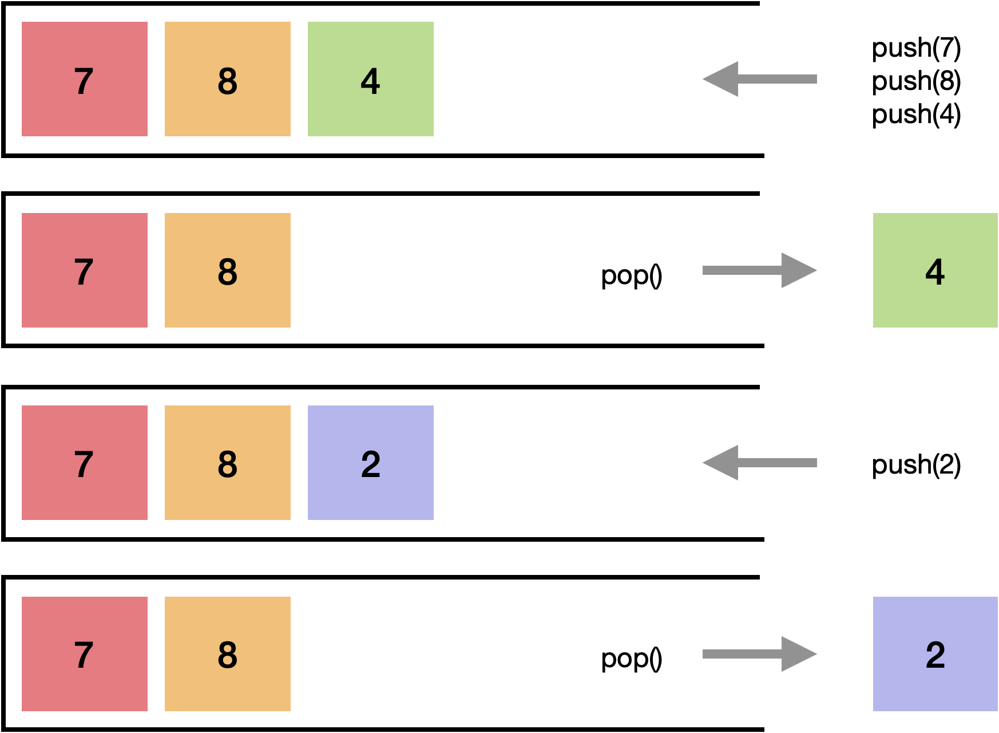
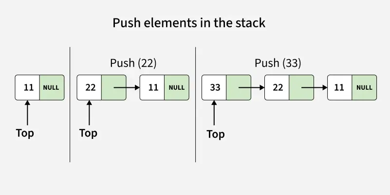
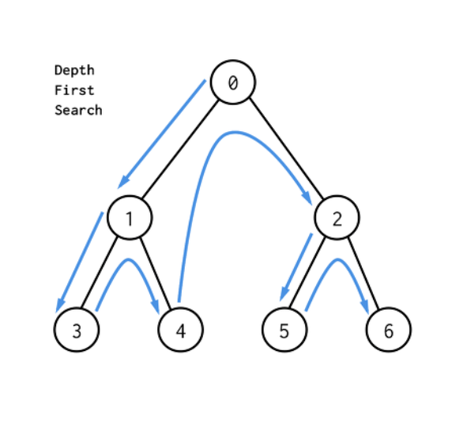
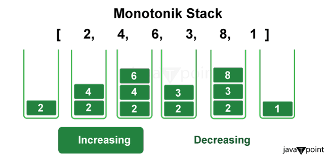
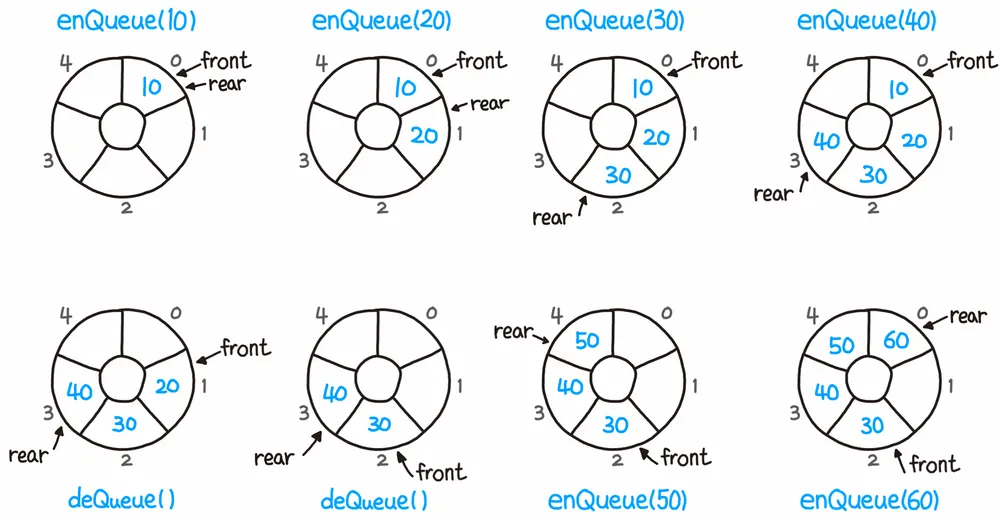

우리가 컴퓨터로 해결하려는 문제는 보통 데이터를 어떻게 다룰것인가? 로 귀결된다.
데이터를 무작위로 뿌려놓으면 필요 할 때 찾기도 어려울 뿐더러, 추가/삭제에 엄청난 시간이 걸린다.
올바른 자료구조의 선택은 시스템의 성능과 안정성을 좌우하는 핵심이며
데이터를 목적에 맞게, 가장 효율적으로 담고 꺼내 쓰기 위한 그릇이자 정리 정돈의 규칙이다

Stack은 논리적으로 LIFO ( Last in First Out )을 따르는 추상 자료형이다.
데이터의 메모리 삽입,삭제,읽기 등 접근이 한쪽 방향, TOP이라 부르는 단일 포인터에서만 진행된다.
스택은 그 자체로 물리적인 메모리 구조라기 보다는 규칙을 정의한 인터페이스이다.
실제 메모리 상에선 배열이나 연결리스트를 기반으로 구현된다.

우선 연속적인 메모리 공간을 할당 받는다.
그리고 내부에서 정수형 Index인 TOP 변수를 유지하며 초기는 -1이다.
PUSH 연산시 TOP을 +1 하며, POP 연산시 Index Data를 반환하고 TOP을 -1한다.
캐시 지역성이 뛰어나 연속적인 접근이 빠르지만
지정된 배열의 크기에서 벗어나면
더 큰 배열을 선언하고 데이터를 복사하는 동적 배열 확장 비용이 발생한다.
이 경우에는 $O(n)$의 시간이 소요될 수 있다.

메모리의 흩어진 공간에 동적으로 노드를 할당하고,
각 노드가 다음 노드의 포인터를 가지는 단방향 연결 리스트의 head 노드를 top으로 취급한다.
push와 pop은 단순히 포인터 연결만 변경하므로 항상 엄밀한 $O(1)$을 보장하며 크기 제한이 없다.
하지만 각 노드가 포인터를 위한 추가 메모리를 요구하고, 캐시 지역성이 떨어진다.
Python의 List는 이미 동적 배열로 구현되어 있으며, 스택의 핵심 연산인 Push, Pop을
$O(1)$시간에 처리 할 수 있도록 되어있다.
객체 지향적 관점에서 스택의 동작만 하도록 클래스로 감싸보았다.
class Stack:
def __init__(self):
# 데이터를 담을 빈 리스트 초기화
self._elements = []
def push(self, item):
"""스택의 맨 위(끝)에 데이터를 추가합니다. O(1)"""
self._elements.append(item)
def pop(self):
"""스택의 맨 위(끝)에서 데이터를 꺼내고 반환합니다. O(1)"""
if self.is_empty():
raise IndexError("빈 스택에서 pop을 수행할 수 없습니다.")
return self._elements.pop()
def peek(self):
"""데이터를 꺼내지 않고 맨 위의 값을 확인만 합니다. O(1)"""
if self.is_empty():
raise IndexError("빈 스택에서 peek을 수행할 수 없습니다.")
return self._elements[-1]
def is_empty(self):
"""스택이 비어있는지 확인합니다."""
return len(self._elements) == 0
def __str__(self):
return f"Stack(bottom -> top): {self._elements}"
# 사용 예시
my_stack = Stack()
my_stack.push(10)
my_stack.push(20)
my_stack.push(30)
print(my_stack) # Stack(bottom -> top): [10, 20, 30]
print(my_stack.pop()) # 30 반환

DFS(깊이 우선 탐색)을 구현 할 때 보통 자기 자신을 호출하는 재귀 함수를 만든다.
하지만 파이썬과 같은 언어에선 재귀 호출이 깊어지게 되면 호출 스택 한계에 부딪혀 RecursionError가 발생한다.
이를 방지하고 메모리를 제어하기 위해 명시적인 스택 자료구조를 직접 구현하여 사용한다.
동작의 핵심은 시작 노드를 스택에 넣고, 스택에서 노드 하나를 꺼낸 뒤
그 노드와 연결된 아직 방문하지 않은 이웃 노드들을 모조리 스택에 넣게 되면,
방금 넣은 이웃 노드 중 하나가 다음 번에 바로 꺼내져 끝없이 깊은 곳으로 먼저 파고들게 된다.
트랜스포머나 GAN같은 복잡한 딥러닝 모델을 설계 할 때,
PyTorch나 TensorFlow 내부에서는 수많은 연산들이 방향성 비순환 그래프를 이룬다.
이 후 역전파 학습시 DFS를 응용한 위상 정렬 알고리즘이 스택을 활용해 미분 연산 순서를 연결한다.

단조 스택은 알고리즘 최적화의 꽃으로, 특정 조건을 강제함으로써, 불필요한 반복을 없앴다.
어떤 값이든 스택에 딱 한 번 Push,POP이 실행되어 배열을 뒤적거릴 필요 없이 계산이 끝난다.

큐는 데이터의 순서를 엄격하게 보존하는 FIFO구조의 자료 구조이다.
가장 먼저 들어온 데이터가 먼저 나간다는 원리지만,
이를 성능 손실 없이 구현하고 분산, 탐색에 적용하는 아주 정교한 기법들을 가지고있다.
from collections import deque
import time
N = 100000
# 1. 성능이 매우 떨어지는 List 기반 큐 (사용 금지)
list_queue = list(range(N))
start = time.time()
while list_queue:
list_queue.pop(0) # O(n) 연산이 n번 반복되어 총 O(n^2) 소요
print(f"List pop(0) 소요 시간: {time.time() - start:.4f}초")
# 2. O(1) 성능을 보장하는 Deque (표준 접근법)
deque_queue = deque(range(N))
start = time.time()
while deque_queue:
deque_queue.popleft() # O(1) 연산이 n번 반복되어 총 O(n) 소요
print(f"Deque popleft() 소요 시간: {time.time() - start:.4f}초")